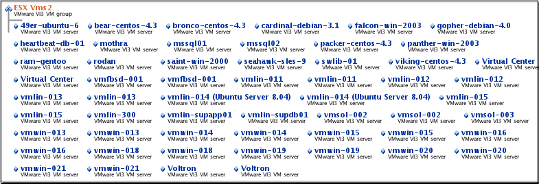

Overview of the Map Control
The Map control, available when a resource is selected in the HQ user interface - presents graphical view of the current resource and resources that are related to it. The map illustrates hierarchical inventory relationships, and a resource's membership in groups or applications.
A resource map shows the name and resource type of currently selected resource in orange font. Child or member resources are shown above the selected resources; parent or containing resource is shown below.
In the example below, note that:
- The name of the currently selected resource is in orange font. In the example, the resource is a server type: "ActiveMQ Embedded 5.3".
- The resources listed above the current resource are its children --- assuming it has children. If the currently selected resource is a service type, it would not have children.
- The resource below the current resource is its parent --- assuming it has a parent. If the currently selected resource is a platform type, it would have no parent.
Each resource name is a link; click the link to navigate to the Indicators page for that resource.
The resource type for each resource is shown below the resource name.

You can map a:
- platform
- server
- service
- compatible group
Resource Map for a Platform
The screenshot below is a resource map for a platform of type "Linux", shown in orange. The resources listed above the platform are the 9 servers running on it.

Resource Map for a Server
The screenshot below is a resource map for a server of type "ActiveMQ Embedded 5.3".
- The resources listed above the server are the six services that run it it.
- The resource shown below the service its parent platform — whose resource type is "MacOSX".
Resource Map for a Service
The screenshot below is a resource map for a service of type "ActiveMQ Embedded 5.3 Topic".
- The service runs in an "ActiveMQ Embedded 5.3" server, which is hosted on a "MacOSX" platform
- The service is part of an application called "myap".

Resource Map for a Compatible Group
The screenshot below is a resource map for compatible group that contains servers of type "VMware VI3 VM" - the name of each member resource is shown as a hyperlink.
